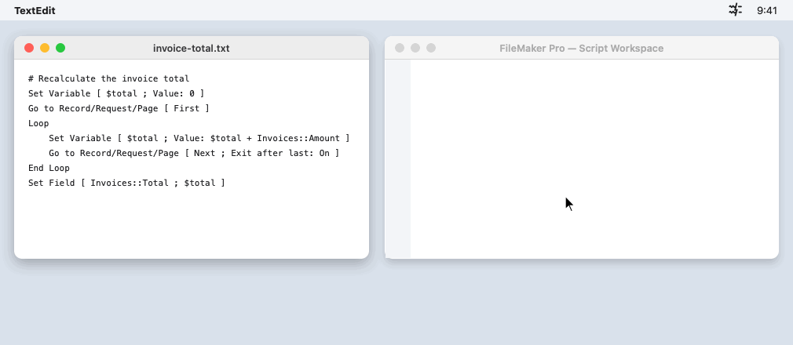
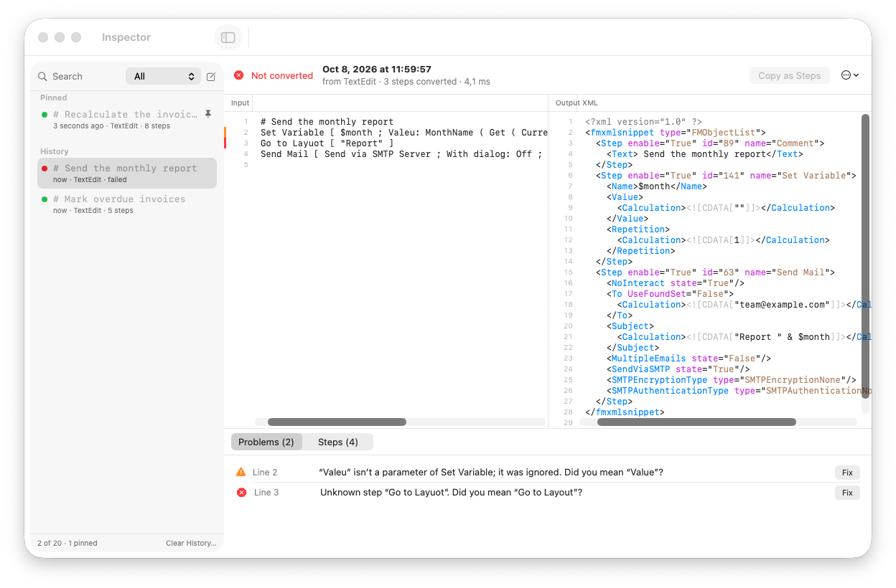

fmscript2xml
Paste plain-text script steps into FileMaker as real steps.
Download for macOS
Why
FileMaker can't paste script steps written as text. A step you see in an editor, a code review, documentation or an AI assistant has to be retyped by hand in the Script Workspace, line by line. That is slow and error-prone work.
fmscript2xml does it for you. Copy the steps as text, press a shortcut, and paste them into FileMaker as real script steps. The conversion takes a fraction of a second.
How it works
- CopySelect script steps written as text, in any app, and copy them.
- ConvertPress ⌃⌥⌘F. The clipboard now holds FileMaker steps.
- PastePaste them into a script in FileMaker's Script Workspace.
If a step can't be converted, the clipboard is left unchanged and a notification names the line, with a "did you mean" suggestion when there is one.
Features
- Lives in the menu barOne global shortcut, configurable. No windows in the way.
- HistoryCopy any recent conversion again from the menu bar. Pin the ones you reuse.
- InspectorSee which input line became which XML step, edit the input and fix problems in place.
- Did you meanTypos in step names and parameters come with a suggested fix.
- PrivateEverything happens on your Mac. No account, no telemetry.
- No FileMaker needed to convertThe app writes FileMaker's clipboard format itself.

Installing
fmscript2xml is in beta for all 0.x versions. Beta builds aren't notarised by Apple yet, so macOS blocks the first launch:
- Download the DMG, open it, and drag fmscript2xml to Applications.
- Open it. When macOS says it can't verify the developer, click Done.
- Open System Settings → Privacy & Security, click Open Anyway next to "fmscript2xml was blocked", and confirm.
You only do this once; updates install from the app. Alternatively, in Terminal:
xattr -dr com.apple.quarantine /Applications/fmscript2xml.app